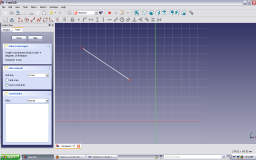
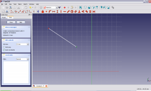
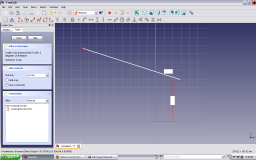
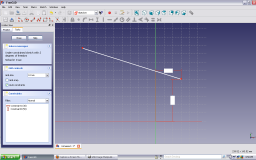

|
| メニュー位置 |
|---|
| Sketch → Sketcher constraints → Constrain lock |
| ワークベンチ |
| スケッチャー, パートデザイン |
| デフォルトのショートカット |
| None |
| 参照 |
| Constraint Coincident |
Contents |
"選択されたアイテムに対してロック拘束を作成します"
説明
この拘束ツールは選択された任意のアイテムに対して完全な拘束を試みます。
注意：当面の間、点に対しては他の拘束と併用しないことをお勧めします
FreeCADはまだ開発途上にあるためこのツールで点以外のものを'ロック'しようとするとおかしな動作になります。例えば（V0.12 R4802では）円を中心点ではなく円周線で固定しようとすると水平拘束と垂直拘束が拘束ダイアログ内に表示されますが、値は両方ともゼロでグラフィック表示には何も表示されません。
操作
-
まず必要なのは拘束したいアイテムをハイライトさせることです。上で述べた理由からハイライトさせるのは点だけにした方がいいでしょう。
 -
ハイライトはアイテム上にマウスを移動させ、左マウスボタンをクリックすることで可能です。
ハイライトされたアイテムは色が緑色に変わります。
 -
アイテをハイライトさせたらロック拘束を左クリックしてハイライトしたアイテムにロックをかけます。普通、これによって二つの拘束が適用されます。描画軸原点からの水平距離の拘束と描画軸原点からの垂直距離の拘束です。デフォルトでは拘束される値は点の現在の座標に設定されます。

-
ロックを構成する水平拘束と垂直拘束は3Dビュー内またはComboViewパネルのConstraintタブ内の対応する拘束をダブルクリックすることで適切な値に編集できます。ダブルクリックすると拘束を編集するためのダイアログボックスが表示されます。水平拘束コンポーネントをクリックすると以下のようになります：
 .
. - 適切な値をダイアログボックスに入力してOKを押します。

- 拘束の新しい値が描画に適用されます。
 - 垂直拘束を編集して点を適切な位置に拘束する場合も同じようにします。



{kind=link}
{kind=link}
{kind=link}
{kind=link}